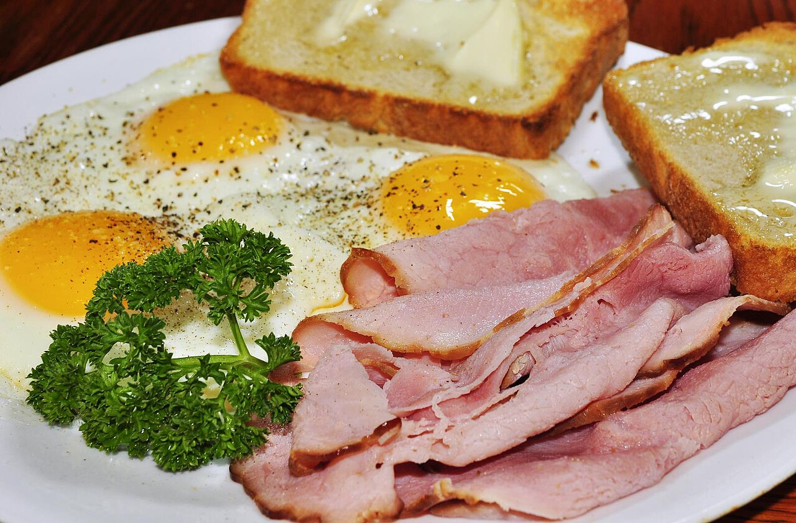

Ham and Eggs

Description
Ham and eggs is a classic hot dish made from ham and eggs, usually enjoyed for breakfast, lunch, or a quick dinner.
Ingredients
- 2 large fresh eggs (per serving)
- 2 slices of ham (or a ham steak)
- 1.5 teaspoons of olive oil or butter (unsalted or salted)
- A pinch of salt and black pepper
Steps
- Heat olive oil in a skillet over medium-high heat. Toss in ham and cook for 1 to 2 minutes.
- Flip ham and carefully crack an egg on top of each slice. Reduce heat to medium-low, cover, and cook until ham is caramelized, egg whites are just set, and yolks are soft, 2 1/2 to 3 minutes.
Home